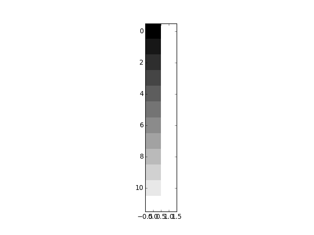

Estimation for many voxels at the same time¶
We often want to fit the same design to many different voxels.
Let’s make a design with a linear trend and a constant term:
>>> X = np.ones((12, 2))
>>> X[:, 0] = np.linspace(-1, 1, 12)
>>> plt.imshow(X, interpolation='nearest', cmap='gray')
<...>

To fit this design to any data, we take the pseudoinverse:
>>> import numpy.linalg as npl
>>> piX = npl.pinv(X)
>>> piX.shape
(2, 12)
Now let’s make some data to fit to:
>>> y_0 = np.random.normal(size=12)
>>> beta_0 = piX.dot(y_0)
>>> beta_0
array([-0.372953, 0.295955])
We can fit this same design to another set of data:
>>> y_1 = np.random.normal(size=12)
>>> beta_1 = piX.dot(y_1)
>>> beta_1
array([ 0.340509, -0.591232])
Now the trick. Because of the way that matrix multiplication works, we can fit
to these two sets of data with the same call to dot:
>>> Y = np.vstack((y_0, y_1)).T
>>> betas = piX.dot(Y)
>>> betas
array([[-0.372953, 0.340509],
[ 0.295955, -0.591232]])
Of course this is true for any number of columns of Y.

{kind=link}
{kind=link}